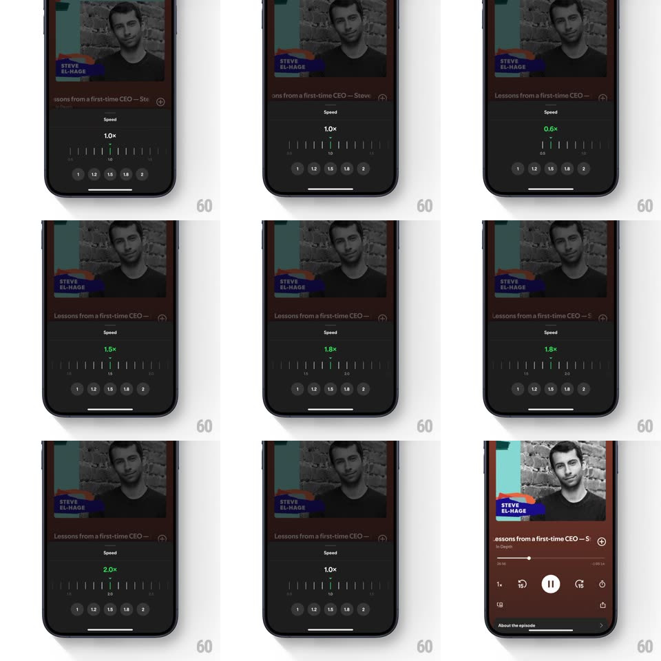

Media
Frame-by-frame

Rebuild this interaction 1:1: Spotify's speed slider - the playback Speed sheet puts a big speed readout over a ruler-style tick slider; dragging the ruler scrubs the speed continuously (0.5x-2.0x), the value turns green off-default, and preset pills snap the slider.

Rebuild this interaction 1:1: Spotify's speed slider - the playback Speed sheet puts a big speed readout over a ruler-style tick slider; dragging the ruler scrubs the speed continuously (0.5x-2.0x), the value turns green off-default, and preset pills snap the slider.
## Integration
Integration: stack-agnostic spec - springs given as stiffness/damping, timed motions as duration + curve; map every value to your framework and animation library of choice.
## Scene
The dark player ("Lessons from a first-time CEO - Ste...", In Depth artwork) behind the Speed sheet: grabber, "Speed" label, a large centered readout ("1.0x", "0.8x", "1.8x"...), a horizontal ruler of tick marks with a center marker, and a row of preset pills (1, 1.2, 1.5, 1.8, 2). Done returns to the player, whose speed chip shows the new value.
## Motion spec
Pattern: scrubbable ruler with snap presets.
- The sheet rises over the player (spring ~340/24, 350ms) showing the current speed.
- Drag the ruler: ticks scroll under the fixed center marker 1:1 with the finger; the readout updates live in 0.05 steps and grows slightly during drag (scale 1 -> 1.08).
- The readout is white at 1.0x and green at any other value - the color flips the instant you leave default.
- Release: the ruler snaps to the nearest 0.05 tick (spring ~500/25, 180ms) with haptic-style tick feedback as marks pass.
- Tap a preset pill: the pill highlights and the ruler animates to that value (scroll 300ms, ease-out) - readout and ticks travel together.
- Done collapses the sheet (280ms) and the player's speed chip crossfades to the new value.
## Calibration
- Tick spacing maps linearly: 0.5-2.0 across the ruler, major ticks longer at 0.5 marks.
- The ruler has momentum on fling and always lands snapped.
## Reduced motion
Ruler steps without momentum; readout crossfades between values.
## Don't miss
- The center marker is a fixed vertical line - the ticks move, it doesn't.
- 1.0x sits at the ruler's visual center when the sheet opens at default.